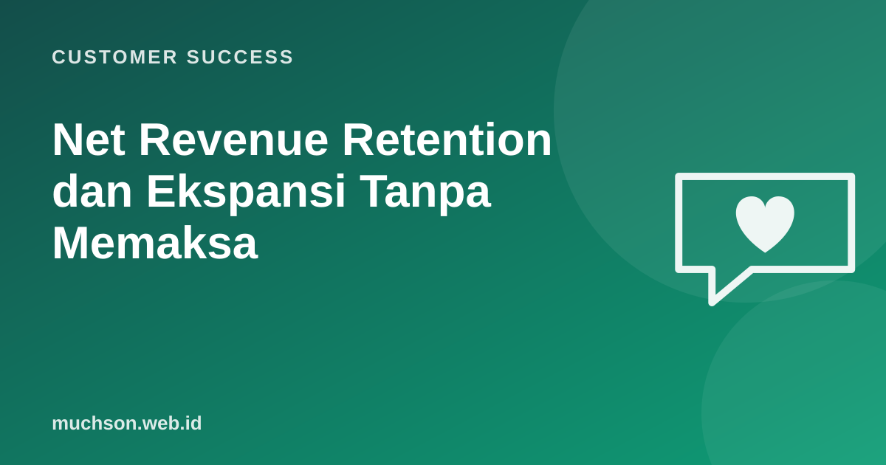

Beranda › Artikel › Customer Success
Customer SuccessNet Revenue Retention dan Ekspansi Tanpa Memaksa
Bayangkan bisnis yang tetap tumbuh walau tidak mendapat satu pun pelanggan baru tahun ini. Itu terjadi bila pelanggan lama tumbuh lebih besar daripada pendapatan yang hilang dari pelanggan yang berhenti. Metrik yang mengukurnya disebut net revenue retention.

Rumus NRR dan GRR
NRR = (MRR awal + ekspansi − kontraksi − churn) ÷ MRR awal × 100%
GRR = (MRR awal − kontraksi − churn) ÷ MRR awal × 100%
(hanya dari pelanggan yang sudah ada di awal periode;
pelanggan baru tidak dihitung)Mengapa NRR di atas 100% berharga
Dengan NRR 110%, pendapatan dari pelanggan yang ada tumbuh 10% per tahun dengan sendirinya. Pelanggan baru menjadi pertumbuhan tambahan, bukan sekadar menutup lubang. Banyak perusahaan SaaS publik melaporkan NRR sebagai indikator kesehatan, dan angka yang konsisten di atas 100% biasanya dianggap kuat, terutama di segmen pelanggan bisnis.
Ekspansi yang sehat lahir dari nilai
Turun paket (kontraksi) bukan selalu kegagalan. Membantu pelanggan memilih paket yang tepat saat mereka kebesaran sering mencegah churn total dan menjaga kepercayaan.
Pembagian peran CS dan sales
Banyak organisasi membagi: CSM menjaga adopsi, kesehatan, dan mengidentifikasi peluang; account executive menangani negosiasi komersial ekspansi besar. Pembagian ini menjaga CSM tetap dipercaya sebagai penasihat, bukan penjual.
Tanya jawab
Apakah pelanggan baru dihitung dalam NRR?
NRR atau GRR yang lebih penting?
Apakah NRR relevan untuk bisnis non-SaaS?
Sumber dan bacaan lanjut
- Reichheld dan Sasser (1990): Zero Defections (ringkasan Bain)
- Churn rate (artikel terkait)
- Customer lifetime value (artikel terkait)
- QBR (artikel terkait)